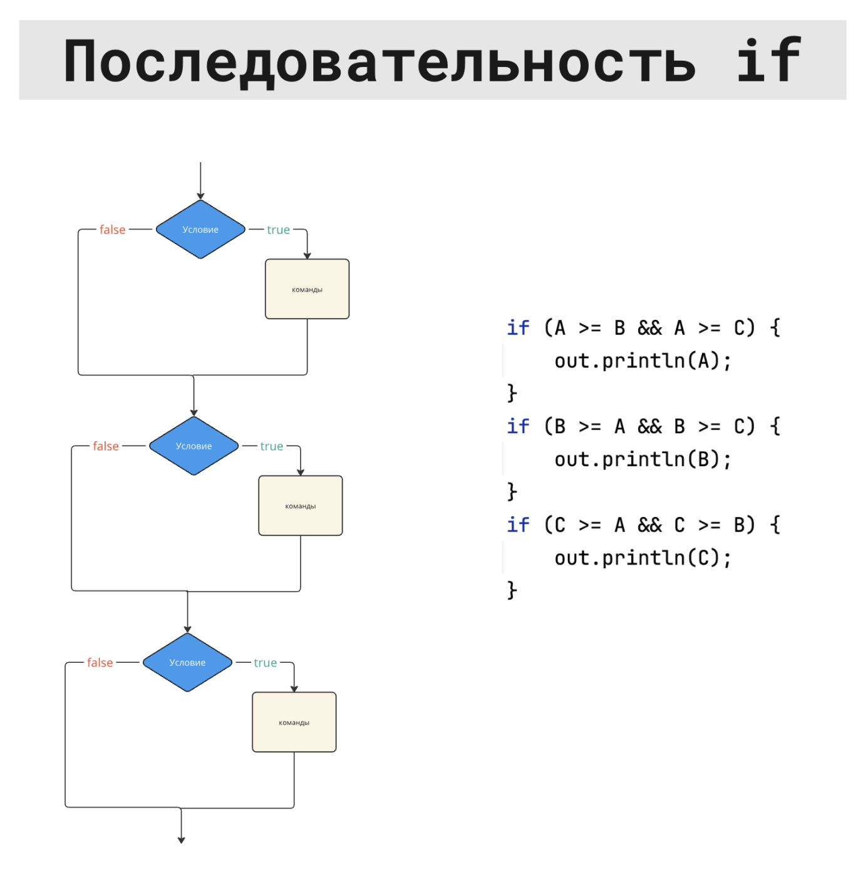
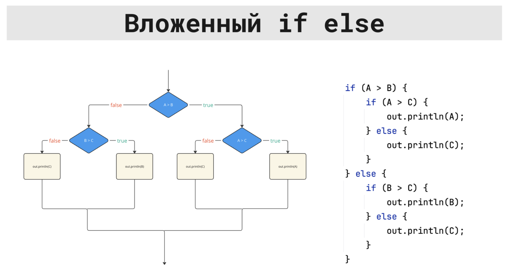
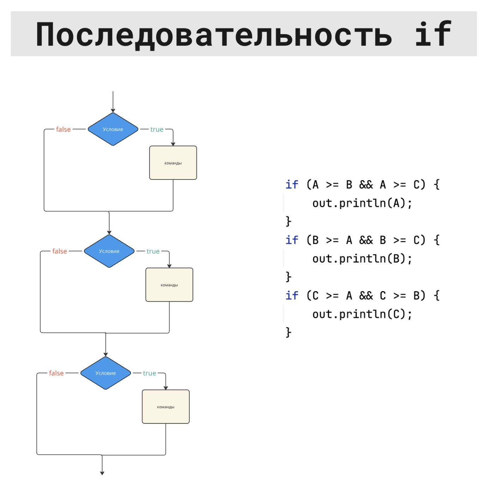
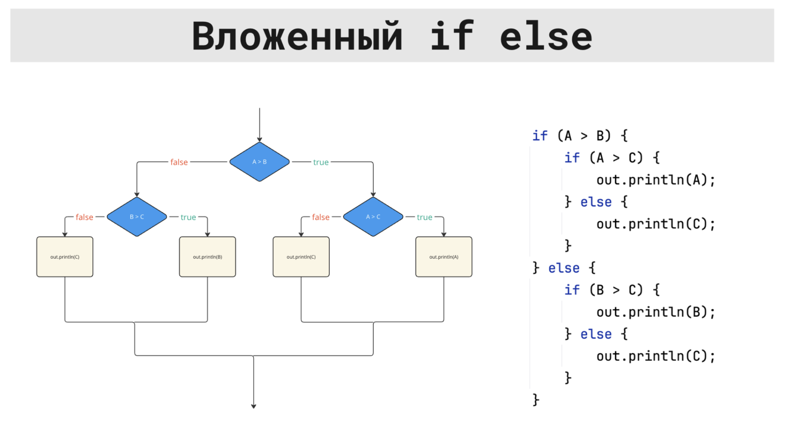

Условия (if)
Во многих задачах нужно действовать по-разному в зависимости от условия:
если число положительное – написать одно, если отрицательное – другое, если ноль – третье.
Для этого в Java есть оператор if. Он проверяет логическое выражение (да/нет) и в зависимости от результата выполняет нужный блок кода.
int x = in.nextInt();
if (x > 0) {
System.out.println("Положительное");
} else if (x < 0) {
System.out.println("Отрицательное");
} else {
System.out.println("Ноль");
}
Краткая сводка
Условие в Java всегда основано на значении типа boolean — true или false.
Основные формы записи:
Чаще всего условия строятся из сравнений (==, !=, <, >, <=, >=) и логических операций (&&, ||, !).
Простое условие: if
Самый простой вариант — выполнить блок кода только когда условие истинно.
int age = in.nextInt();
if (age >= 18) {
System.out.println("Взрослый");
}
System.out.println("Конец программы");
Если age >= 18 истинно, будет выведено два сообщения.
Если ложно — только "Конец программы".
Два варианта: if … else
Когда нужно выбрать между двумя вариантами, используется if … else:
int x = in.nextInt();
if (x % 2 == 0) {
System.out.println("Чётное");
} else {
System.out.println("Нечётное");
}
Здесь всегда выполняется ровно один из блоков: либо после if, либо после else.
Несколько вариантов: цепочка if … else if … else
Если вариантов больше двух, можно сделать цепочку условий:
int x = in.nextInt();
if (x > 0) {
System.out.println("Положительное");
} else if (x < 0) {
System.out.println("Отрицательное");
} else {
System.out.println("Ноль");
}
Блоки проверяются сверху вниз:
- сначала проверяется первое условие;
- если оно ложно, проверяется следующее
else if; - если все условия ложны, выполняется блок
else(если он есть).
Диапазоны и составные условия
Частая задача — проверить, попадает ли число в некоторый диапазон.
int x = in.nextInt();
if (x >= 1 && x <= 100) {
System.out.println("В диапазоне 1..100");
} else {
System.out.println("Вне диапазона");
}
Здесь используется логическое И (&&): оба условия x >= 1 и x <= 100 должны быть истинны.
Другой пример — один из нескольких вариантов:
int month = in.nextInt();
if (month == 12 || month == 1 || month == 2) {
System.out.println("Зима");
}
Здесь логическое ИЛИ (||): достаточно, чтобы истинным было хотя бы одно из сравнений.
Вложенные условия
Иногда удобно писать условия внутри условий:
int x = in.nextInt();
if (x >= 0) {
if (x % 2 == 0) {
System.out.println("Неотрицательное чётное");
} else {
System.out.println("Неотрицательное нечётное");
}
} else {
System.out.println("Отрицательное");
}
Такие конструкции нужно писать аккуратно и не усложнять без необходимости.
Часто вложенные if можно заменить на одну цепочку if … else if … else.
Типичные шаблоны
Максимум из двух чисел
int a = in.nextInt();
int b = in.nextInt();
int max;
if (a >= b) {
max = a;
} else {
max = b;
}
System.out.println(max);
Классический «знак числа»
int x = in.nextInt();
if (x > 0) {
System.out.println(1);
} else if (x < 0) {
System.out.println(-1);
} else {
System.out.println(0);
}
Проверка корректности значения
int score = in.nextInt();
if (score < 0 || score > 100) {
System.out.println("Некорректное значение");
} else {
System.out.println("ОК");
}
Блок-схемы

 




Что нужно запомнить
Условие в if — это логическое выражение (boolean), которое даёт true или false.
Основные формы: одиночный if, пара if … else и цепочка if … else if … else.
Сложные условия удобно строить из сравнений и логических операций: диапазоны — через &&, варианты «или то, или это» — через ||.
В C++ оператор if выбирает, какой блок кода выполнить, в зависимости от условия.
Условие обычно пишут как сравнение (x > 0, a == b) или как логическое выражение с &&, ||, !.
Минимум, который нужен в задачах
if (условие) { ... } – выполнить блок, если условие истинно.
if (условие) { ... } else { ... } – выбрать один из двух вариантов.
if (...) { ... } else if (...) { ... } else { ... } – выбрать один из нескольких вариантов.
В C++ условием может быть не только bool, но и целое число: 0 считается ложью, любое ненулевое – истиной. На практике лучше писать явные сравнения.
Пример: знак числа
#include <iostream>
using namespace std;
int main() {
int x;
cin >> x;
if (x > 0) {
cout << "Положительное\n";
} else if (x < 0) {
cout << "Отрицательное\n";
} else {
cout << "Ноль\n";
}
}
Пример: чётное или нечётное
#include <iostream>
using namespace std;
int main() {
int x;
cin >> x;
if (x % 2 == 0) {
cout << "Чётное\n";
} else {
cout << "Нечётное\n";
}
}
Пример: диапазон
В Python оператор if выбирает, какой блок кода выполнить, в зависимости от условия.
Условия обычно пишут как сравнение (x > 0, a == b) или как логическое выражение с and, or, not.
Минимум, который нужен в задачах
if условие: – выполнить блок, если условие истинно.
if ...: ... else: ... – выбрать один из двух вариантов.
if ...: ... elif ...: ... else: ... – выбрать один из нескольких вариантов.
В Python важно, что блоки кода задаются отступами.
Пример: знак числа
x = int(input())
if x > 0:
print("Положительное")
elif x < 0:
print("Отрицательное")
else:
print("Ноль")
Пример: чётное или нечётное
Пример: диапазон
Что можно писать в условии
В Java в if (...) должно быть строго boolean.
В C++ в условии можно написать и bool, и число: 0 – ложь, ненулевое – истина.
В Python можно писать True/False, сравнения, а также использовать «истинность» значений (например, 0 считается ложью). В задачах обычно удобнее писать сравнения.
Как выглядит блок кода
В Java и C++ блоки задаются фигурными скобками { ... }.
В Python блоки задаются отступами.
Ключевые слова
Java: if, else if, else.
C++: if, else if, else.
Python: if, elif, else.
Логические операции
Java и C++: &&, ||, !.
Python: and, or, not.
Частая ошибка в C++
В условии легко перепутать == (сравнение) и = (присваивание). В if нужно сравнение.